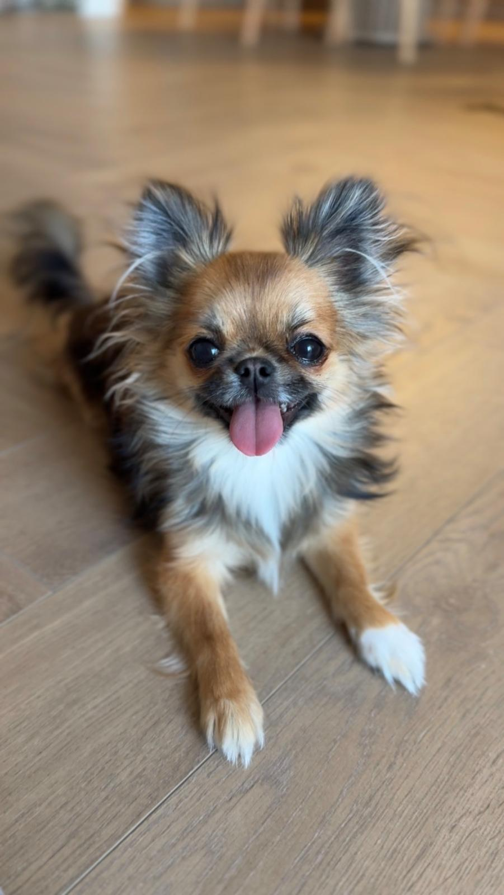

Najmniejszy pies świata, skąd się wziął
Chihuahua pochodzi z Meksyku i swoją nazwę zawdzięcza stanowi Chihuahua, skąd w XIX wieku pierwsze pieski trafiły do Stanów Zjednoczonych, a potem do Europy. Za jego przodka uważa się techichi, małego psa towarzyszącego ludom prekolumbijskim. To najstarsza i zarazem najmniejsza rasa Ameryki: dorosły piesek waży zwykle od 1,5 do 3 kg.
Ta miniaturowa sylwetka bywa myląca. Chihuahua nie czuje się małym psem, w jego głowie mieszka pies pełnowymiarowy: czujny strażnik, oddany towarzysz i spryciarz o zaskakująco silnym charakterze. I właśnie za to kochają go opiekunowie na całym świecie: dostajesz „dużego psa” w formacie, który zmieści się w torbie podróżnej i na każdych kolanach.
Charakter: wielkie serce w małym ciele
Jeśli mielibyśmy opisać chihuahua trzema słowami, byłyby to: odwaga, czujność i przywiązanie. To pies, który wybiera sobie człowieka i oddaje mu całe serce. Chętnie spędzi z Tobą każdą minutę dnia, na kolanach, na spacerze, w samochodzie, pod kocem.
- Odważny do przesady. Chihuahua nie wie, że jest mały. Potrafi ostrzegawczo szczeknąć na psa dziesięć razy większego, dlatego to opiekun musi być jego rozsądkiem na spacerze.
- Czujny jak dzwonek. Doskonale słyszy i widzi wszystko, co dzieje się wokół domu. Dobrze poprowadzony sygnalizuje, ale nie zaszczekuje domu na śmierć, to kwestia wychowania, o którym piszemy w poradniku o socjalizacji.
- Bezgranicznie oddany. Tworzy bardzo silną więź, najczęściej z jedną-dwiema osobami. Źle znosi bycie „psem niczyim”, potrzebuje swojego człowieka.
- Inteligentny i sprytny. Szybko się uczy, zarówno sztuczek, jak i tego, co może opiekunowi „wychodzić bokiem”. Konsekwencja jest przyjacielem opiekuna chihuahua.
Chihuahua to pies, który nie zna lustra: w jego sercu mieszka wilczur. Rolą opiekuna jest kochać tę odwagę, i mądrze ją chronić.
Dla kogo jest chihuahua
Chihuahua będzie szczęśliwy u osób, które chcą psa blisko siebie, dosłownie. To rasa idealna dla singli, par, aktywnych seniorów i rodzin ze starszymi, rozsądnymi dziećmi. Świetnie odnajduje się w mieszkaniu w bloku: jego potrzeby ruchowe zaspokoi codzienny spacer i zabawa w domu.
Rozważ inną rasę, jeśli w domu są maluchy poniżej wieku szkolnego (przypadkowe upadki i zbyt mocne uściski to dla 2-kilogramowego pieska realne zagrożenie), albo jeśli pies miałby spędzać większość dnia sam. Chihuahua samotności po prostu nie lubi, a nauka zostawania samemu ma swoje granice.
Rada z naszej hodowli
W rozmowie z nami powiedz, jak wygląda Twój dzień, praca, dzieci, inne zwierzęta. Znamy temperament każdego naszego szczeniaka i podpowiemy, który maluch będzie pasował do Twojego rytmu: śmiały urwis do ruchliwego domu, spokojny przytulak do cichego mieszkania.
Codzienne życie: ruch, zabawa i… ciepło
Chihuahua nie potrzebuje kilometrów, potrzebuje regularności i towarzystwa. Dwa-trzy krótsze spacery dziennie plus zabawa w domu w zupełności wystarczą. Wiele piesków tej rasy uwielbia też podróże: dzięki rozmiarowi chihuahua jest naturalnym kompanem wyjazdów.
O czym warto pamiętać na co dzień?
- Zimą marznie. Mały organizm szybko traci ciepło, ubranko na mroźne spacery to nie fanaberia, tylko rozsądek. Krótkowłose chihuahua docenią je szczególnie.
- Skoki z wysokości to wróg numer jeden. Kanapa czy łóżko z perspektywy 20-centymetrowych nóżek to skała. Schodki lub podest przy kanapie chronią delikatne stawy.
- Zabawa to też trening. Kilka minut nauki sztuczek dziennie męczy głowę malucha przyjemniej niż godzina biegania, i buduje Waszą więź.
Umaszczenia i typy szaty
Chihuahua występuje w dwóch odmianach: krótkowłosej (gładka, przylegająca szata, minimum pielęgnacji) i długowłosej (miękki włos z piórami na uszach, ogonie i łapach, wciąż łatwy w pielęgnacji, wymaga szczotkowania 2-3 razy w tygodniu).
Paleta kolorów jest ogromna i to jeden z uroków rasy. W naszej hodowli na przestrzeni lat pojawiały się między innymi maluchy sable (przepiękne „przydymione” umaszczenie), czekoladowe i niebieskie, ich zdjęcia znajdziesz w galerii chihuahua. Pamiętaj, że kolor szczeniaka potrafi delikatnie zmieniać się z wiekiem: sable może się rozjaśnić, a maska pociemnieć. Jeśli zależy Ci na konkretnym umaszczeniu, najlepiej po prostu zadzwoń, powiemy, czego można spodziewać się w najbliższych miotach.

O czym pamiętać przy tej rasie
Chihuahua to rasa długowieczna, przy dobrej opiece dożywa 12-18 lat. Warto jednak znać kilka tematów typowych dla miniaturek:
- Hipoglikemia u szczeniąt, mały organizm szybko zużywa cukier, dlatego szczeniak musi jeść regularnie. Więcej w naszym poradniku o żywieniu.
- Rzepka i stawy, jak u większości małych ras, warto unikać skoków z wysokości i utrzymywać szczupłą sylwetkę.
- Zęby, miniaturki mają skłonność do odkładania kamienia; przyzwyczajaj malucha do szczotkowania od pierwszych tygodni.
- Ciemiączko (molera), u części szczeniąt chihuahua kość czaszki zrasta się z czasem; to cecha znana w rasie, którą po prostu trzeba mieć na uwadze przy zabawach z dziećmi.
Wszystkie te tematy szeroko omawiamy w poradniku o zdrowiu ras miniaturowych, i przy każdym odbiorze szczeniaka.
Chihuahua w Bajecznych Urwisach
Nasze chihuahua dorastają w domu, wśród codziennych dźwięków, zapachów i czułości całej rodziny. Zanim maluch do Ciebie trafi, zna już dotyk człowieka, odgłos odkurzacza i wieczorne życie salonu. Otrzymuje książeczkę zdrowia ze szczepieniami i odrobaczeniami stosownymi do wieku, rodowód 4-pokoleniowy oraz wyprawkę na pierwsze dni.
A ponieważ każdy szczeniak jest inny, przy wyborze malucha opowiadamy o jego temperamencie zupełnie szczerze, bo zależy nam, żeby to było dopasowanie na całe psie życie.
Najczęstsze pytania
Czy chihuahua dużo szczeka?
Chihuahua jest czujny i lubi komentować świat, ale „zaszczekany piesek” to najczęściej efekt braku wychowania, nie cecha rasy. Maluch, który ma zaspokojone potrzeby, jasne zasady i został dobrze zsocjalizowany, sygnalizuje, ale nie robi z tego stylu życia.
Czy chihuahua można nauczyć załatwiania się na podkład?
Tak, to jedna z zalet rasy. Wielu opiekunów łączy spacery z podkładem higienicznym w domu, co ratuje w mroźne dni i przy chorobie. Zasady nauki czystości opisujemy w poradniku o pierwszych dniach szczeniaka.
Krótkowłosy czy długowłosy, który lepszy?
Charakter mają ten sam. Różnica to pielęgnacja (krótkowłosy: przetarcie gumową rękawicą raz w tygodniu; długowłosy: szczotkowanie 2-3 razy w tygodniu) i wygląd. Wybór to kwestia serca, a my chętnie pokażemy Ci maluchy obu typów.
Czy chihuahua dogaduje się z innymi psami?
Tak, zwłaszcza gdy od szczeniaka ma dobre doświadczenia z psami różnych rozmiarów. Na spacerach warto jednak zachować rozsądek: dla tak małego pieska nawet życzliwy, duży pies może być niebezpieczny przez sam entuzjazm zabawy.
Masz pytania albo szukasz swojego maluszka? Zadzwoń pod numer 601 074 022, powiemy, co aktualnie mamy, kiedy planujemy kolejny miot i chętnie doradzimy w każdym temacie z tego poradnika.
Zadzwoń

.jpg)